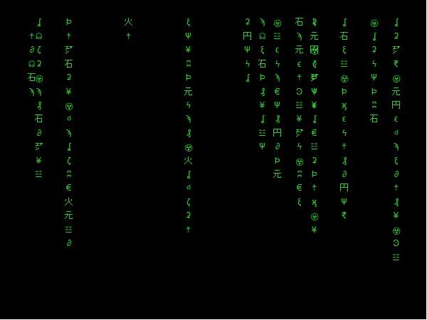

This was a project for fun and distraction with
gganimate.
First we need to load the required R packages.
gganimate (which actually also loads
ggplot2).reshape2 package to convert our data from
short to long format.gifski package to render a
ggplot2 object to an animated gif file.data <- data.frame(X=c(0,1), Y=c(0,1))
downstr <- c("石","ϗ","Ϸ","ζ","ϡ","ϟ","ξ","Ψ","ϵ","Ͽ",
"火","☳","☨","☢","☣","☊","☌","ʆ","ʡ","ʭ",
"∂","元","円","㍐","₰","₹","€","¥")
# plot(1:length(downstr),1:length(downstr), type="n")
# text(1:length(downstr),rep(12,length(downstr)),labels=downstr)
ht <- sample(3:20,1)
ggplot(data) +
geom_point(aes(X, Y)) +
annotate("text", x=rep(sample(seq(0,1,0.05),1),ht),
y=seq(1.2,1.2-(0.05*(ht-1)),-0.05),
label = paste0(sample(downstr, ht, replace=F)),
vjust = 1, col="#d0fff8", size=3.5) +
theme_minimal() +
theme(plot.background = element_rect(fill="black"),
panel.grid = element_line(color="transparent"),
axis.text = element_text(color="transparent"))Plot to show our simulated dataset.
## manually make melted data not using reshape::melt ####
for(j in 1:15){
md <- data.frame(t = as.integer(rep(NA,400)),
x = rep(sample(seq(0,1,0.02),1), 20*20),
y = as.integer(rep(NA,400)),
lbl = rep(sample(downstr,20, replace = F), 20))
y0 <- sample(seq(1,2,0.05),1)
for(i in 1:20){
md$t[(20*i-19):(20*i)] <- rep(i,20)
md$y[(20*i-19):(20*i)] <- seq(y0-(0.05*(i-1)),(y0-0.95)-(0.05*(i-1)),l=20)
}
md$t <- as.factor(md$t)
assign(paste0("mxd",str_pad(j,2,"left","0")), md)
}
flist <- ls(patt="mxd")
mxdAll <- data.frame(t = as.integer(NULL), x = as.numeric(NULL),
y = as.numeric(NULL), lbl = as.character(NULL))
for(i in 1:length(flist)){
mxdAll <- rbind(mxdAll, get(flist[i]))
}
str(mxdAll)## 'data.frame': 12000 obs. of 4 variables:
## $ t : Factor w/ 20 levels "1","2","3","4",..: 1 1 1 1 1 1 1 1 1 1 ...
## $ x : num 0.8 0.8 0.8 0.8 0.8 0.8 0.8 0.8 0.8 0.8 ...
## $ y : num 1.6 1.55 1.5 1.45 1.4 1.35 1.3 1.25 1.2 1.15 ...
## $ lbl: chr "¥" "ʡ" "☌" "☊" ...The data we have created is already long-form, so we don't need to
use the melt() function in the reshape2
package.
mtrx <- ggplot(mxdAll) +
geom_text(aes(x=x, y=y, label=lbl, colour=t), show.legend = F,
vjust=1, size=12, size.unit="pt", fontface=2) +
scale_x_continuous(limits=c(0,20)) +
scale_y_continuous(limits=c(0,1)) +
scale_color_manual(
values = colorRampPalette(c("limegreen","#a0ffd0"))(20)
) +
theme_minimal() +
theme(plot.background = element_rect(fill="black"),
panel.background = element_rect(fill="black"),
panel.grid = element_line(color="transparent"),
legend.position="none",
axis.ticks.x = element_blank(),
axis.text.x = element_blank(),
axis.text = element_blank(),
panel.border = element_rect(colour = 1,fill=NA)) +
transition_states(dd1.L$t,
transition_length = 1,
state_length = c(3,rep(0,10),3),
wrap = FALSE) +
enter_fade() +
exit_fade() +
shadow_wake(wake_length = 0.15, size = T, colour="#60606040")Now that we have made a gganimate object, we can save it
as an animated gif file using the anim_save() function from
the gifski package:
require(gifski)
options(gganimate.dev_args = list(width = 600, height = 450))
anim_save("images/mtrxAnim.gif", animate(mtrx, renderer = gifski_renderer(),
duration = 12))
Figure 3. Animation of machine screens from The
Matrix movie made with the gganimate R package.
CC-BY-SA • All content by Ratey-AtUWA. My employer does not necessarily know about or endorse the content of this website.
Created with rmarkdown in RStudio using the cyborg theme from Bootswatch via the bslib package, and fontawesome v5 icons.